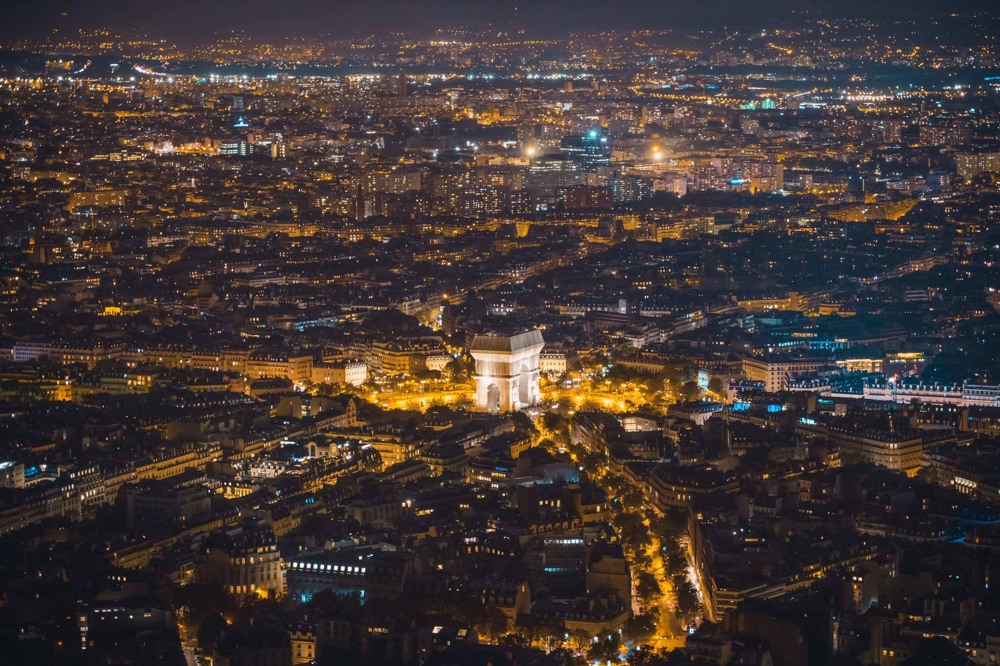

HDR Video Systems
Designing video behavior around dynamic range, tone, color, and motion so scenes feel controlled rather than processed.
Computational imaging, video systems, HDR, stabilization, ISP pipelines, and cinematic visual expression. Engineering precision tuned for visual perception.
Concise areas of practice across camera systems, computational imaging, and visual tools.
Designing video behavior around dynamic range, tone, color, and motion so scenes feel controlled rather than processed.
Thinking through image movement, temporal consistency, and camera experience as one visual system.
Exploring the space between sensor data, pipeline decisions, perception, and expressive image output.
Photography, video frames, and visual experiments arranged like a small private screening room.

A selected frame from the visual archive.
Choose a module to move between short films, city studies, natural tone, and still-life color surfaces.
The gallery is now modular. Move between films and image studies; video entries open in-place and keep the page as a quiet screening room.
Personal directions around camera systems, visual interfaces, computational photography, and creative coding.
Interfaces for reading image behavior, comparing modes, and making pipeline decisions visible.
Experiments around perception, color, denoising, motion, and visual texture.
Graphic systems that make technical image states feel cinematic and legible.
Neil Zhou is an imaging systems engineer and visual creator focused on computational imaging, video systems, HDR video, stabilization, ISP pipeline, camera experience design, and cinematic visual expression. His work sits between engineering precision and visual perception.
Signal becomes image. Image becomes feeling.
For public portfolio inquiries, collaborations, or visual technology conversations.